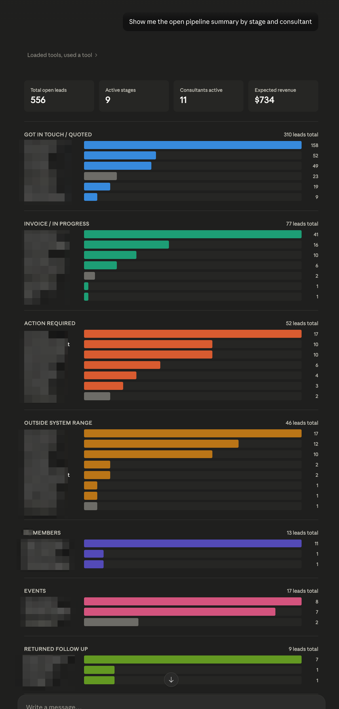
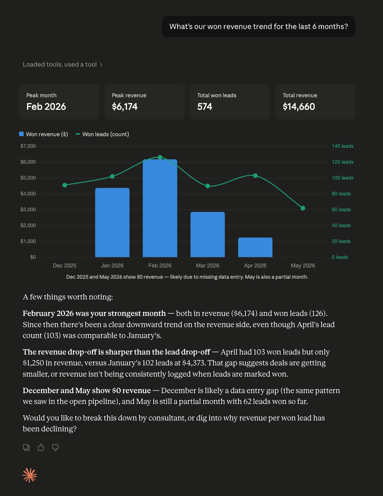

Free setup wizard · By equationx, makers of OdooPilot
Stop building reports. Start asking your Odoo.
Connect Claude Desktop, Claude Code, Cursor, or any Model Context Protocol
client to your Odoo CRM. Give your team hours back every week, run 1:1s
with real numbers, answer any ad-hoc question in 30 seconds, and serve
customers with their full context already at hand.
Already heard of OdooPilot?
This is the free Odoo-side companion that gets you connected.
What it costs
This module is free. It generates an Odoo API key and a config block — that's it.
You also need an MCP client running on a laptop. Your options:
Free / open-source MCP clients from the community — build-your-own friendly
Build your own using the config block as a template (DIY)
OdooPilot — a ready-made agent by equationx with 20 tools + 4 workflow skills, $199 one-time (separate paid product)
Free
module · LGPL-3
Local-first
Your data stays
2-click
setup wizard
2FA-ready
API keys
CE 17 + 18
Community Edition
The value, once connected
Hours back. Better answers. Happier customers.
Once your MCP client is connected, your whole team — sales, marketing,
ops, customer success, finance — can ask Odoo anything in plain English
and get an answer in 30 seconds. Six concrete value buckets:
Time back
Stop assembling reports by hand.
The reports your managers build every Monday, the spreadsheets sales-ops
rolls up for the partner update, the weekly briefs for the board — ask
once, get them in seconds.
Coach with data
1:1s, reviews, onboarding — on real numbers.
Walk into every 1:1 with the salesperson's 30-day picture and the
leads worth discussing. New reps explore the CRM by asking. Quarterly
reviews built from data, not memory.
Marketing accountability
Know which channel actually pays.
Win rate × revenue per lead by source / campaign / medium. Find
the channels that look busy but burn time. Spend the next dollar on
the one that works.
Ad-hoc anything
Answer any question, no SQL, no dashboards.
Slice pipeline by segment, country, tag, deal size. Compare any two
time periods. Find customers fitting any rule. Audit the CRM's
own data quality. All in conversation.
Catch issues early
See leaks before they cost you.
Aging leads going cold, deals stuck in late-stage, customers slipping
toward renewal risk, missing follow-ups across the team. Catch them
when there's still time to act.
Customer responsiveness
Reply with full context, every time.
Before a sales call, ask for the customer's full history. Before a
support reply, ask for their account state. Faster, better-informed
responses without context-switching to Odoo.
Real output, real Odoo
A few examples of the answers.
Screenshots below are from OdooPilot,
a paid third-party MCP client by equationx. Any MCP client connected via this module
reads the same Odoo data and can be asked the same questions.

Pipeline at a glance. Open leads bucketed by stage and consultant.
Source ROI audit. Scale · Fix · Test · Ignore matrix.

Loss patterns. Junk vs. worked-then-lost, top lost reasons.
These are four example questions. The actual range is unlimited — any cut of any Odoo model.
Who this is for
Sales & revenue leaders
Pipeline visibility, forecasting, coaching, performance reviews on demand.
Marketers & growth
Source / campaign ROI, attribution audits, where to spend next quarter.
Operations & sales ops
Data quality audits, weekly rollups, ad-hoc segmentation, custom-field queries.
Customer-facing roles
Pull customer history, account state, recent activity — in conversation.
Founders & GMs
Coach with numbers, not vibes. Quarterly reads without IT requests.
Odoo implementers
Ship to clients in 15 minutes. Custom-pack revenue on top.
Setup
Two clicks, then ask anything.
Step 1
Install & open the wizard
Settings → MCP Connector → Setup wizard.
Step 2
Generate the API key
One click creates a scoped, revocable key on the current user.
Step 3
Paste config into your MCP client
The wizard renders the JSON block. Paste, restart, done.
Standalone, by design
This module is free and useful on its own. The generated key works with
any MCP-compatible client — not only with the OdooPilot agent mentioned
above. You can also use the produced config as a template for building your
own MCP integrations.
What this module ships:
One-click scoped, revocable API key on the current user (replaces password auth)
Auto-filled JSON config block (URL, database, login, key) ready to paste into any MCP client
2FA-compatible authentication — bypasses the 2FA roadblock that breaks password-only XML-RPC
Admin-only access (System group), with no data exposure to unprivileged users
Zero external network calls during install or use
Customisations & paid support
Every Odoo deployment is different — custom fields, custom stages, custom
modules, multi-company setups, Enterprise-only features. The connector
handles the standard case out of the box.
For non-trivial deployments equationx offers paid setup and customisation
support: review your config, build vertical packs for your schema,
troubleshoot custom-module compatibility, or help you wire MCP into a
bespoke workflow.